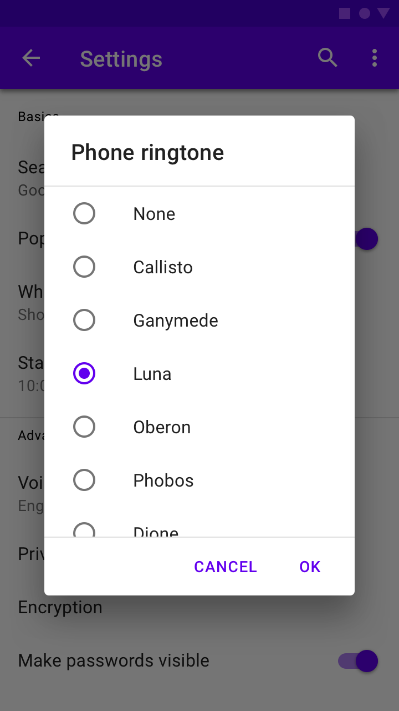
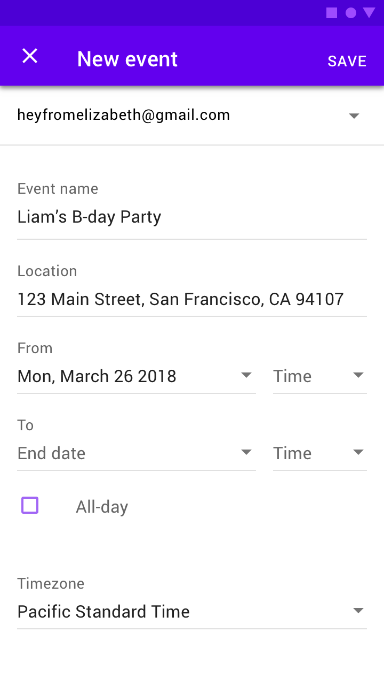

Dialogs inform users about a task and can contain critical information, require decisions, or involve multiple tasks.
There are four types of dialogs:
A dialog is a type of modal window that appears in front of app content to provide critical information or ask for a decision. Dialogs disable all app functionality when they appear, and remain on screen until confirmed, dismissed, or a required action has been taken.
Dialogs are purposefully interruptive, so they should be used sparingly.
For additional guidance, refer to the Material guidelines.
npm install @material/dialog@use "@material/dialog";
@include dialog.core-styles;Note: Styles for any components you intend to include within dialogs (e.g. List, Checkboxes, etc.) must also be imported.
import {MDCDialog} from '@material/dialog';
const dialog = new MDCDialog(document.querySelector('.mdc-dialog'));Note: See Importing the JS component for more information on how to import JavaScript.
MDC Dialog makes no assumptions about what will be added to the
mdc-dialog__content element. Any list, checkboxes, etc. must
also be instantiated. If your dialog contains any layout-sensitive
components, you should wait until MDCDialog:opened is emitted
to instantiate them (or call layout on them) so that the
dialog’s transition finishes first.
For example, to instantiate an MDC List inside of a simple or confirmation dialog:
import {MDCList} from '@material/list';
const list = new MDCList(document.querySelector('.mdc-dialog .mdc-list'));
dialog.listen('MDCDialog:opened', () => {
list.layout();
});Note: Mispositioned or incorrectly-sized elements (e.g. ripples, floating labels, notched outlines) are a strong indication that child components are being instantiated before the dialog has finished opening.
aria-hidden as a fallback for aria-modal
aria-modal is part of the ARIA 1.1 specification, and
indicates to screen readers that they should confine themselves to a
single element. We recommend adding aria-modal="true" to the
root element of its DOM structure.
However, not all user agents and screen readers properly interpret this attribute.
The fallback is to use aria-hidden using
aria-hidden="true" to all static content beneath the dialog
when the dialog is open. This will be easiest to achieve if all non-modal
elements are under a single common ancestor under the body, so that
aria-hidden can be applied to one element.
dialog.listen('MDCDialog:opened', function() {
// Assuming contentElement references a common parent element with the rest of the page's content
contentElement.setAttribute('aria-hidden', 'true');
});
dialog.listen('MDCDialog:closing', function() {
contentElement.removeAttribute('aria-hidden');
});Note: The example above intentionally listens to the opened (not opening) event and the closing (not closed) event in order to avoid additional jumping between elements by screen readers due to one element becoming hidden before others become visible.
Alert dialogs interrupt users with urgent information, details, or actions.
<div class="mdc-dialog">
<div class="mdc-dialog__container">
<div class="mdc-dialog__surface"
role="alertdialog"
aria-modal="true"
aria-labelledby="my-dialog-title"
aria-describedby="my-dialog-content">
<div class="mdc-dialog__content" id="my-dialog-content">
Discard draft?
</div>
<div class="mdc-dialog__actions">
<button type="button" class="mdc-button mdc-dialog__button" data-mdc-dialog-action="cancel">
<div class="mdc-button__ripple"></div>
<span class="mdc-button__label">Cancel</span>
</button>
<button type="button" class="mdc-button mdc-dialog__button" data-mdc-dialog-action="discard">
<div class="mdc-button__ripple"></div>
<span class="mdc-button__label">Discard</span>
</button>
</div>
</div>
</div>
<div class="mdc-dialog__scrim"></div>
</div>Simple dialogs can display items that are immediately actionable when selected. They don’t have text buttons.
As simple dialogs are interruptive, they should be used sparingly. Alternatively, dropdown menus provide options in a non-modal, less disruptive way.

<div class="mdc-dialog">
<div class="mdc-dialog__container">
<div class="mdc-dialog__surface"
role="alertdialog"
aria-modal="true"
aria-labelledby="my-dialog-title"
aria-describedby="my-dialog-content">
<!-- Title cannot contain leading whitespace due to mdc-typography-baseline-top() -->
<h2 class="mdc-dialog__title" id="my-dialog-title"><!--
-->Choose a Ringtone<!--
--></h2>
<div class="mdc-dialog__content" id="my-dialog-content">
<ul class="mdc-list mdc-list--avatar-list">
<li class="mdc-list-item" tabindex="0" data-mdc-dialog-action="none">
<span class="mdc-list-item__text">None</span>
</li>
<li class="mdc-list-item" data-mdc-dialog-action="callisto">
<span class="mdc-list-item__text">Callisto</span>
</li>
<!-- ... -->
</ul>
</div>
</div>
</div>
<div class="mdc-dialog__scrim"></div>
</div>
Note: Note the inclusion of the
mdc-list--avatar-list class, which aligns with the Simple
Dialog spec.
Confirmation dialogs give users the ability to provide final confirmation of a choice before committing to it, so they have a chance to change their minds if necessary.
If the user confirms a choice, it’s carried out. Otherwise, the user can dismiss the dialog. For example, users can listen to multiple ringtones but only make a final selection upon tapping “OK.”

<div class="mdc-dialog">
<div class="mdc-dialog__container">
<div class="mdc-dialog__surface"
role="alertdialog"
aria-modal="true"
aria-labelledby="my-dialog-title"
aria-describedby="my-dialog-content">
<!-- Title cannot contain leading whitespace due to mdc-typography-baseline-top() -->
<h2 class="mdc-dialog__title" id="my-dialog-title"><!--
-->Choose a Ringtone<!--
--></h2>
<div class="mdc-dialog__content" id="my-dialog-content">
<ul class="mdc-list">
<li class="mdc-list-item" tabindex="0">
<span class="mdc-list-item__graphic">
<div class="mdc-radio">
<input class="mdc-radio__native-control"
type="radio"
id="test-dialog-baseline-confirmation-radio-1"
name="test-dialog-baseline-confirmation-radio-group"
checked>
<div class="mdc-radio__background">
<div class="mdc-radio__outer-circle"></div>
<div class="mdc-radio__inner-circle"></div>
</div>
</div>
</span>
<label id="test-dialog-baseline-confirmation-radio-1-label"
for="test-dialog-baseline-confirmation-radio-1"
class="mdc-list-item__text">None</label>
</li>
<!-- ... -->
</ul>
</div>
<div class="mdc-dialog__actions">
<button type="button" class="mdc-button mdc-dialog__button" data-mdc-dialog-action="close">
<div class="mdc-button__ripple"></div>
<span class="mdc-button__label">Cancel</span>
</button>
<button type="button" class="mdc-button mdc-dialog__button" data-mdc-dialog-action="accept">
<div class="mdc-button__ripple"></div>
<span class="mdc-button__label">OK</span>
</button>
</div>
</div>
</div>
<div class="mdc-dialog__scrim"></div>
</div>
Note: In the example above, the Cancel button intentionally has the
close action to align with the behavior of clicking the
scrim or pressing the Escape key, allowing all interactions involving
dismissal without taking an action to be detected the same way.
Full-screen dialogs group a series of tasks, such as creating a calendar entry with the event title, date, location, and time. Because they take up the entire screen, full-screen dialogs are the only dialogs over which other dialogs can appear.
MDC Web does not yet support full-screen dialogs.

All dialog variants support the concept of dialog actions. Any element
within a dialog may include the
data-mdc-dialog-action attribute to indicate that interacting
with it should close the dialog with the specified action. This action is
then reflected via event.detail.action in the
MDCDialog:closing and MDCDialog:closed events.
Additionally, two interactions have defined actions by default:
Both of these map to the close action by default. This can be
accessed and customized via the component’s
scrimClickAction and escapeKeyAction properties,
respectively.
Setting either of these properties to an empty string will result in that interaction being disabled (i.e. the dialog will no longer close in response to the interaction). Exercise caution when doing this - it should always be possible for a user to dismiss the dialog.
Any action buttons within the dialog which equate strictly to a dismissal
with no further action should also use the close action; this
will make it easy to handle all such interactions consistently, while
separately handling other actions.
As indicated in the
Dialog design article, buttons within the mdc-dialog__actions element are
arranged horizontally by default, with the confirming action
last.
In cases where the button text is too long for all buttons to fit on a single line, the buttons are stacked vertically, with the confirming action first.
MDC Dialog detects and handles this automatically by default, reversing
the buttons when applying the stacked layout. This automatic behavior can
be disabled by setting autoStackButtons to
false on the component instance:
This will also be disabled if the
mdc-dialog--stacked modifier class is applied manually to the
root element before the component is instantiated, but note that dialog
action button labels are recommended to be short enough to fit on a single
line if possible.
MDC Dialog supports indicating that one of its action buttons represents the default action, triggered by pressing the Enter key. This can be used e.g. for single-choice Confirmation Dialogs to accelerate the process of making a selection, avoiding the need to tab through to the appropriate button to confirm the choice.
To indicate that a button represents the default action, add the
data-mdc-dialog-button-default data attribute. For example:
...
<div class="mdc-dialog__actions">
<button type="button" class="mdc-button mdc-dialog__button" data-mdc-dialog-action="close">
<div class="mdc-button__ripple"></div>
<span class="mdc-button__label">Cancel</span>
</button>
<button type="button" class="mdc-button mdc-dialog__button" data-mdc-dialog-action="accept" data-mdc-dialog-button-default>
<div class="mdc-button__ripple"></div>
<span class="mdc-button__label">OK</span>
</button>
</div>
...Dialogs which require making a choice via selection controls should initially disable any button which performs an action if no choice is selected by default. MDC Dialog does not include built-in logic for this, since it aims to remain as unopinionated as possible regarding dialog contents, aside from relaying information on which action is taken.
| CSS Class | Description |
|---|---|
mdc-dialog |
Mandatory. The root DOM element containing the surface and the container. |
mdc-dialog__scrim |
Mandatory. Semitransparent backdrop that displays behind a dialog. |
mdc-dialog__container |
Mandatory. Wrapper element needed to ensure flexbox behavior in IE 11. |
mdc-dialog__surface |
Mandatory. The bounding box for the dialog’s content. |
mdc-dialog__title |
Optional. Brief summary of the dialog’s purpose. |
mdc-dialog__content |
Optional. Primary content area. May contain a list, a form, or prose. |
mdc-dialog__actions |
Optional. Footer area containing the dialog’s action buttons. |
mdc-dialog__button |
Optional. Individual action button. Typically paired with
mdc-button.
|
mdc-dialog--open |
Optional. Indicates that the dialog is open and visible. |
mdc-dialog--opening |
Optional. Applied automatically when the dialog is in the process of animating open. |
mdc-dialog--closing |
Optional. Applied automatically when the dialog is in the process of animating closed. |
mdc-dialog--scrollable |
Optional. Applied automatically when the dialog has overflowing content to warrant scrolling. |
mdc-dialog--stacked |
Optional. Applied automatically when the dialog’s action buttons can’t fit on a single line and must be stacked. |
| Mixin | Description |
|---|---|
container-fill-color($color) |
Sets the fill color of the dialog. |
scrim-color($color, $opacity) |
Sets the color of the scrim behind the dialog. |
title-ink-color($color, $opacity) |
Sets the color of the dialog’s title text. |
content-ink-color($color, $opacity) |
Sets the color of the dialog’s content text. |
content-padding($padding-top, $padding-right, $padding-bottom,
$padding-left)
|
Sets the padding of the dialog’s content. |
scroll-divider-color($color, $opacity) |
Sets the color of the dividers which display around scrollable content. |
shape-radius($radius, $rtl-reflexive) |
Sets the rounded shape to dialog surface with given radius size. Set
$rtl-reflexive to true to flip radius values in RTL
context, defaults to false.
|
min-width($min-width) |
Sets the minimum width of the dialog (defaults to 280px). |
max-width($max-width, $margin) |
Sets the maximum width of the dialog (defaults to 560px max width and 16px margins). |
max-height($max-height, $margin) |
Sets the maximum height of the dialog (defaults to no max height and 16px margins). |
Note: The max-width and max-height mixins
only apply their maximum when the viewport is large enough to
accommodate the specified value when accounting for the specified margin
on either side. When the viewport is smaller, the dialog is sized such
that the given margin is retained around the edges.
| Data Attributes | Description |
|---|---|
data-mdc-dialog-button-default |
Optional. Add to a button to indicate that it is the default action button (see Default Action Button section above). |
data-mdc-dialog-initial-focus |
Optional. Add to an element to indicate that it is the element to initially focus on after the dialog has opened. |
MDCDialog properties and methods
| Property | Value Type | Description |
|---|---|---|
isOpen |
boolean (read-only) |
Proxies to the foundation’s isOpen method. |
escapeKeyAction |
string |
Proxies to the foundation’s getEscapeKeyAction and
setEscapeKeyAction methods.
|
scrimClickAction |
string |
Proxies to the foundation’s getScrimClickAction and
setScrimClickAction methods.
|
autoStackButtons |
boolean |
Proxies to the foundation’s getAutoStackButtons and
setAutoStackButtons methods.
|
| Method Signature | Description |
|---|---|
layout() => void |
Recalculates layout and automatically adds/removes modifier classes
like --scrollable.
|
open() => void |
Opens the dialog. |
close(action: string?) => void |
Closes the dialog, optionally with the specified action indicating why it was closed. |
| Event Name | event.detail |
Description |
|---|---|---|
MDCDialog:opening |
{} |
Indicates when the dialog begins its opening animation. |
MDCDialog:opened |
{} |
Indicates when the dialog finishes its opening animation. |
MDCDialog:closing |
{action: string?} |
Indicates when the dialog begins its closing animation.
action represents the action which closed the dialog.
|
MDCDialog:closed |
{action: string?} |
Indicates when the dialog finishes its closing animation.
action represents the action which closed the dialog.
|
If you are using a JavaScript framework, such as React or Angular, you can create a Dialog for your framework. Depending on your needs, you can use the Simple Approach: Wrapping MDC Web Vanilla Components, or the Advanced Approach: Using Foundations and Adapters. Please follow the instructions here.
MDCDialogAdapter| Method Signature | Description |
|---|---|
addClass(className: string) => void |
Adds a class to the root element. |
removeClass(className: string) => void |
Removes a class from the root element. |
hasClass(className: string) => boolean |
Returns whether the given class exists on the root element. |
addBodyClass(className: string) => void |
Adds a class to the <body>. |
removeBodyClass(className: string) => void |
Removes a class from the <body>. |
eventTargetMatches(target: EventTarget \| null, selector: string)
=> void
|
Returns true if the target element matches the given
CSS selector, otherwise false.
|
trapFocus(initialFocusEl: HTMLElement \| null) => void
|
Sets up the DOM such that keyboard navigation is restricted to
focusable elements within the dialog surface (see
Handling Focus Trapping below
for more details). Moves focus to initialFocusEl, if
set.
|
releaseFocus() => void |
Removes any effects of focus trapping on the dialog surface (see Handling Focus Trapping below for more details). |
getInitialFocusEl() => HTMLElement \| null |
Returns the data-mdc-dialog-initial-focus element to
add focus to after the dialog has opened.
|
isContentScrollable() => boolean |
Returns true if mdc-dialog__content can be
scrolled by the user, otherwise false.
|
areButtonsStacked() => boolean |
Returns true if mdc-dialog__action buttons
(mdc-dialog__button) are stacked vertically, otherwise
false if they are side-by-side.
|
getActionFromEvent(event: Event) => string \| null
|
Retrieves the value of the
data-mdc-dialog-action attribute from the given event’s
target, or an ancestor of the target.
|
clickDefaultButton() => void |
Invokes click() on the
data-mdc-dialog-button-default element, if one exists
in the dialog.
|
reverseButtons() => void |
Reverses the order of action buttons in the
mdc-dialog__actions element. Used when switching
between stacked and unstacked button layouts.
|
notifyOpening() => void |
Broadcasts an event denoting that the dialog has just started to open. |
notifyOpened() => void |
Broadcasts an event denoting that the dialog has finished opening. |
notifyClosing(action: string) {} |
Broadcasts an event denoting that the dialog has just started
closing. If a non-empty action is passed, the event’s
detail object should include its value in the
action property.
|
notifyClosed(action: string) {} |
Broadcasts an event denoting that the dialog has finished closing.
If a non-empty action is passed, the event’s
detail object should include its value in the
action property.
|
MDCDialogFoundation| Method Signature | Description |
|---|---|
open() |
Opens the dialog. |
close(action: string) |
Closes the dialog, optionally with the specified action indicating why it was closed. |
isOpen() => boolean |
Returns whether the dialog is open. |
layout() |
Recalculates layout and automatically adds/removes modifier classes
e.g. --scrollable.
|
getEscapeKeyAction() => string |
Returns the action reflected when the Escape key is pressed. |
setEscapeKeyAction(action: string) |
Sets the action reflected when the Escape key is pressed. Setting to
'' disables closing the dialog via Escape key.
|
getScrimClickAction() => string |
Returns the action reflected when the scrim is clicked. |
setScrimClickAction(action: string) |
Sets the action reflected when the scrim is clicked. Setting to
'' disables closing the dialog via scrim click.
|
getAutoStackButtons() => boolean |
Returns whether stacked/unstacked action button layout is automatically handled during layout logic. |
setAutoStackButtons(autoStack: boolean) => void
|
Sets whether stacked/unstacked action button layout is automatically handled during layout logic. |
handleClick(event: MouseEvent) |
Handles click events on or within the dialog’s root
element.
|
handleKeydown(event: KeyboardEvent) |
Handles keydown events on or within the dialog’s root
element.
|
handleDocumentKeydown(event: Event) |
Handles keydown events on or within the document while
the dialog is open.
|
When wrapping the Dialog foundation, the following events must be bound to the indicated foundation methods:
| Event | Target | Foundation Handler | Register | Deregister |
|---|---|---|---|---|
click |
.mdc-dialog (root) |
handleClick |
During initialization | During destruction |
keydown |
.mdc-dialog (root) |
handleKeydown |
During initialization | During destruction |
keydown |
document |
handleDocumentKeydown |
On MDCDialog:opening |
On MDCDialog:closing |
resize |
window |
layout |
On MDCDialog:opening |
On MDCDialog:closing |
orientationchange |
window |
layout |
On MDCDialog:opening |
On MDCDialog:closing |
util API
External frameworks and libraries can use the following utility methods
from the util module when implementing their own component.
| Method Signature | Description |
|---|---|
createFocusTrapInstance(surfaceEl: Element, focusTrapFactory:
function(): !FocusTrap, initialFocusEl: ?Element) =>
!FocusTrap
|
Creates a properly configured focus-trap instance. |
isScrollable(el: Element \| null) => boolean |
Determines if the given element is scrollable. |
areTopsMisaligned(els: Element[]) => boolean |
Determines if two or more of the given elements have different
offsetTop values.
|
In order for dialogs to be fully accessible, they must conform to the guidelines outlined in:
The main implication of these guidelines is that the only focusable elements are those contained within a dialog surface.
Trapping focus correctly for a modal dialog requires a complex set of events and interaction patterns that we feel is best not duplicated within the logic of this component. Furthermore, frameworks and libraries may have their own ways of trapping focus that framework authors may want to make use of. For this reason, we have two methods on the adapter that should be used to handle focus trapping:
trapFocus() is called when the dialog is open and should
set up focus trapping adhering to the ARIA practices in the link above.
releaseFocus() is called when the dialog is closed and
should tear down any focus trapping set up when the dialog was open.
The MDCDialog component uses the
focus-trap
package to handle this.
You can use util.createFocusTrapInstance() (see below) to
easily create a focus trapping solution for your component code.
Note: iOS platform doesn’t seem to register currently focused element
via document.activeElement which causes releasing focus to
last focused element fail.
createFocusTrapInstance()const {activate, deactivate} =
util.createFocusTrapInstance(surfaceEl, focusTrapFactory, initialFocusEl);
Given a dialog surface element an optional focusTrap factory
function, and an optional initial element to focus, such that:
surfaceElinitialFocusEl receives focus when the focus trap is
activated
surfaceEl
This focus trap instance can be used to implement the
trapFocus and releaseFocus adapter methods by
calling instance.activate() and
instance.deactivate() respectively within those methods.
The focusTrapFactory can be used to override the
focus-trap function used to create the focus trap. Its API is
the same as focus-trap’s
createFocusTrap
(which is what it defaults to). You can pass in a custom function for
mocking out the actual function within tests, or to modify the arguments
passed to the function before it’s called.